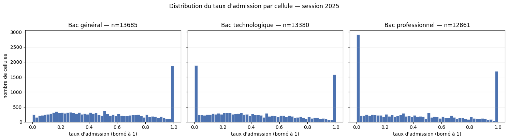

Blocs 1 · 3 · 4 · Données
Les données et le label
Trois sources publiques alimentent EduMatch-IA : Parcoursup pour la demande et l'admission, Sirene pour les débouchés, ONISEP/RNCP/France Travail pour les référentiels de formations et de métiers. Chaque chiffre de cette page est reproduit par une commande, jamais posé de mémoire.
Les sources publiques
La méthode de vérification privilégie l'interrogation des métadonnées du catalogue plutôt que le téléchargement complet, sauf quand le fichier est assez petit pour que ce soit le seul moyen d'obtenir un compte exact. Les gros fichiers (8 CSV Parcoursup, 11 fichiers Sirene) ne sont jamais téléchargés pour cette seule vérification : j'interroge l'API de métadonnées (api/explore/v2.1 côté opendatasoft pour Parcoursup, api/1/datasets/... côté data.gouv pour Sirene et RNCP), qui renvoie nombre d'enregistrements, colonnes, taille et date de publication sans rapatrier la donnée.
Parcoursup — MESR
Un jeu de données par millésime, sur le portail opendatasoft du MESR, exporté en CSV à la demande. Aucun fichier n'est stocké côté source : le connecteur appelle api/explore/v2.1/catalog/datasets/{id}/exports/csv.
| Millésime | Formations | Colonnes | Licence | Dernière modification |
|---|---|---|---|---|
| 2025 | 14 252 | 118 | Licence Ouverte v2.0 | 2026-03-09 |
| 2024 | 14 079 | 118 | Licence Ouverte v2.0 | 2025-01-16 |
| 2023 | 13 869 | 118 | Licence Ouverte v2.0 | 2024-07-01 |
| 2022 | 13 644 | 118 | Licence Ouverte v2.0 | 2023-01-30 |
| 2021 | 13 396 | 118 | Licence Ouverte v2.0 | 2022-01-20 |
| 2020 | 12 760 | 115 | Licence Ouverte v2.0 | 2022-01-20 |
| 2019 | 11 577 | 92 | Licence Ouverte v2.0 | 2020-04-27 |
| 2018 | 10 697 | 85 | Licence Ouverte v2.0 | 2019-10-07 |
Total : 104 274 formation-années, 82 Mo mesurés sur data/raw/parcoursup/ une fois les 8 millésimes téléchargés.
Licence. Licence Ouverte v2.0 (Etalab) : elle oblige à mentionner la source (MESR, Parcoursup) et la date de dernière mise à jour, sans imposer de partage à l'identique ni de restriction d'usage commercial.
Schéma. Le nombre de colonnes croît d'un millésime à l'autre : 85 en 2018, 92 en 2019, 115 en 2020, 118 à partir de 2021, le MESR ayant ajouté des champs au fil des sessions (mentions, néo-bacheliers, académie d'origine). En intersection des noms de champs, je mesure 106 champs communs entre 2020 et 2025 et 83 champs communs sur les 8 sessions. Ce socle est dominé par les compteurs de vœux et d'admis et les identifiants de formation ; il ne suffit pas à entraîner un modèle sur les huit sessions, car le numérateur du label n'existe qu'à partir de 2020 (voir le label).
Fréquence. Annuelle, un jeu par session, publié en fin de campagne (juillet à octobre selon les années).
Sirene — INSEE
Jeu base-sirene-des-entreprises-et-de-leurs-etablissements-siren-siret sur data.gouv, 24 ressources, dernier stock publié le 01/08/2026, fréquence mensuelle, licence Licence Ouverte v2.0. Les URL de téléchargement changeant chaque mois, le connecteur interroge le point d'entrée stable du catalogue, jamais une URL codée en dur.
| Fichier Parquet retenu | Taille (octets) | Go décimal | Lignes | Colonnes |
|---|---|---|---|---|
| StockEtablissement | 2 202 341 459 | 2,20 | 43 896 818 | 54 |
| StockEtablissementHistorique | 870 319 380 | 0,87 | 95 865 102 | 18 |
| StockUniteLegaleHistorique | 855 957 649 | 0,86 | 71 355 318 | 28 |
| StockUniteLegale | 705 090 270 | 0,71 | 29 922 486 | 35 |
| Total 4 fichiers retenus | 4 633 708 758 | 4,63 |
Les 6 fichiers .zip de type stock (les 4 ci-dessus, plus liens de succession et doublons) totalisent 6,44 Go compressés ; les 6 fichiers Parquet correspondants totalisent 4,75 Go. Le nombre de lignes vient de la métadonnée du fichier Parquet, sans lire une seule valeur (pyarrow.parquet.ParquetFile(...).metadata.num_rows) : les analyseurs de data.gouv renvoient une erreur de taille sur ces ressources.
Sur les 43 896 818 lignes de StockEtablissement, les filtres du projet (etat_administratif: A, caractere_employeur: true) n'en retiennent que 2 436 624, soit 5,6 %. Il faut parcourir la totalité pour savoir lesquelles passent le filtre. Une lecture des 2 seules colonnes utiles au filtre isole d'abord 16 715 258 établissements actifs (38,1 %), puis les 2 436 624 actifs et employeurs, en 35,4 secondes. C'est ce chiffre qui borne le temps qu'un traitement distribué équivalent doit battre pour se justifier (voir le modèle en étoile et l'ADR 0002).
Schéma. StockEtablissement porte un champ activitePrincipaleNAF25Etablissement, ajouté depuis le 16 décembre 2025 en anticipation du basculement vers la nomenclature NAF 2025 (bascule prévue début janvier 2027). C'est la colonne à réconcilier parmi les 9 colonnes utiles du projet.
Licence. Licence Ouverte v2.0 (Etalab), attribution obligatoire (source INSEE, base Sirene, date du stock utilisé).
Référentiels — ONISEP, RNCP, France Travail
Quatre producteurs complètent Parcoursup et Sirene pour construire la chaîne de réconciliation NAF ↔ ROME ↔ formation (détaillée dans l'architecture).
| Jeu | Taille | Lignes | Colonnes | Licence |
|---|---|---|---|---|
| Idéo-Formations (ONISEP) | 2,5 Mo | 5 869 | 16 | ODbL |
| Idéo-Métiers (ONISEP) | 0,6 Mo | 1 534 | 13 | ODbL |
| Idéo-Structures secondaire (ONISEP) | 7,7 Mo | 15 293 | 30 | ODbL |
| Idéo-Structures supérieur (ONISEP) | 5,1 Mo | 8 985 | 29 | ODbL |
| RNCP, export du jour (France Compétences) | — | 30 484 fiches, 7 000 actives | 16 | Licence Ouverte v2.0 |
| RNCP, membre ROME de l'archive | 4 353 036 octets | 24 424 fiches | 3 | Licence Ouverte v2.0 |
| Table ROME/NAF (France Travail) | 112 896 octets | — | — | Licence Ouverte v2.0 |
Les quatre jeux ONISEP (IDÉO) sont sous ODbL v1.0, pas Licence Ouverte : elle impose l'attribution et le partage à l'identique de toute base dérivée redistribuée. C'est une contrainte pour naf_rome_formation.csv, qui assemble IDÉO, le membre ROME et le CSV RNCP (Licence Ouverte) et la table France Travail (Licence Ouverte) : la clause de partage à l'identique s'applique potentiellement à cette base dérivée si elle est redistribuée telle quelle.
Le comptage du RNCP par wc -l donne un chiffre faux : le fichier contient des champs texte entre guillemets qui s'étendent sur plusieurs lignes. Un parseur qui respecte les guillemets (module csv de Python) donne le compte correct, utilisé aussi pour les fichiers IDÉO par cohérence. Le nom de fichier du connecteur RNCP est daté (rncp_{date_publication_jour}.csv), jamais un nom fixe écrasé à chaque exécution.
La table de correspondance ROME/NAF de France Travail s'arrête à la division NAF (2 chiffres), jamais à la sous-classe complète (5 caractères) que porte le champ NAF de l'agrégat Sirene : ce plafond de granularité borne la couverture mesurée dans le pipeline de données.
Le label : définition de la cible
Le label est un taux d'admission observé, calculé par cellule (formation × session × type de bac × boursier) :
taux = prop_tot_{bg|bt|bp}[_brs] / nb_voe_pp_{bg|bt|bp}[_brs]Une ligne du fichier Parcoursup est une formation, identifiée par cod_aff_form — clé vérifiée sans doublon ni valeur manquante, 14 252 valeurs distinctes pour 14 252 lignes en 2025. cod_uai (l'établissement) ne suffit pas à identifier une formation : 4 058 établissements pour 14 252 formations, un même établissement en proposant plusieurs. Empilés sur les huit millésimes, la clé devient (session, cod_aff_form).
Six cellules sont possibles par formation et par session : bac général, technologique et professionnel, chacun avec ou sans restriction aux boursiers. Le nombre de cellules exploitables décroît selon le profil : 96,0 % des formations ont une cellule bac général, 83,6 % seulement une cellule bac professionnel boursier. Le numérateur prop_tot_* n'est ventilé par type de baccalauréat qu'à partir de la session 2020 : 2018 et 2019 n'ont pas de cible exploitable. 77 159 cellules pour la session 2025, 440 030 cellules au total sur les six sessions exploitables (67 768 · 71 080 · 72 784 · 74 831 · 76 408 · 77 159 selon la session).

| Cellule | Moyenne | Médiane | Taux nul | Taux à 1 |
|---|---|---|---|---|
| Bac général | 0,522 | 0,498 | 1,2 % | 13,1 % |
| Bac technologique | 0,433 | 0,381 | 12,9 % | 11,8 % |
| Bac professionnel | 0,405 | 0,333 | 21,6 % (2 779 formations) | 13,1 % |
La distribution n'est pas gaussienne : elle est étalée sur tout l'intervalle, avec deux masses non négligeables aux bornes. Ces masses ne sont pas du bruit — une formation très sélective qui n'admet aucun bachelier professionnel produit un vrai zéro, une formation en tension nulle qui accepte tous les vœux produit un vrai un — et le décalage entre moyenne et médiane, plus marqué à mesure que la filière du bac est moins générale, interdit de résumer la sélectivité d'une cellule par sa seule moyenne.
Deux alternatives écartées, et le dépassement de 1
J'ai écarté acc / nb_voe_pp : acc compte les candidats qui ont accepté la proposition et se sont inscrits, pas ceux qui ont été admis. Un lycéen qui reçoit une proposition et la décline parce qu'il a mieux ailleurs a bel et bien été admis ; retenir acc mélangerait la sélectivité de la formation et les préférences des candidats. J'ai aussi écarté le dénominateur nb_cla_pp (classés) au lieu de nb_voe_pp (vœux) : il change la population de référence sans changer la nature du problème de bornage, et le vœu est l'unité qui correspond à la question posée au candidat au moment de la formulation de son vœu.
Le taux dépasse 1 dans 8,9 % des cellules bac général (1 219 sur 13 685), et ce dépassement ne disparaît pas quand les petites cellules sont écartées : à 100 vœux minimum, 483 cellules sur 7 154 dépassent encore 1. nb_voe_pp compte des vœux, donc des candidats ; prop_tot compte des propositions émises, donc des événements — une formation de 100 places émet davantage que 100 propositions au fil de la campagne, chaque désistement libérant une place et déclenchant une nouvelle proposition. Numérateur et dénominateur ne décrivent donc pas la même population : borner à 1 n'est pas une correction de valeurs aberrantes, c'est l'imposition d'une borne sémantique à un rapport qui n'est pas un taux au sens strict (ADR 0009). La moyenne de 0,522 pour le bac général correspond au taux borné à 1 ; la moyenne brute, sans bornage, vaut 0,545.
La cible n'est pas stable dans le temps
Deux définitions de la difficulté d'admission divergent d'une session à l'autre : le taux agrégé toutes cellules confondues baisse de 40,5 % à 36,7 % entre 2020 et 2025, pendant que la moyenne des taux par formation — la cible réellement apprise par le modèle — monte de 0,491 à 0,522 (avec un pic à 0,534 en 2024). L'explication tient au catalogue : il passe de 12 760 à 14 252 formations sur la période, et les formations nouvelles sont en moyenne plus petites et moins tendues, ce qui tire la moyenne par formation vers le haut sans que chaque formation individuelle ne devienne plus accessible. Un dispositif de surveillance de dérive qui suivrait le seul taux agrégé conclurait à l'inverse de la réalité vécue par un candidat regardant une formation donnée.
Deux ruptures de série, distinctes de la cible elle-même : en 2020, la part de mentions très bien passe de 7,4 % à 11,8 % (barème d'examen modifié), le retour à la normale est lent (encore 29,8 % de sans-mention en 2021) — les variables construites à partir des mentions sont contaminées sur 2020 et 2021, la cible ne l'est pas. En 2019 puis 2025, la part de vœux boursiers passe de 12,5 % à 13,8 % puis à 16,3 % en 2020, stable quatre ans, avant de retomber à 13,8 % en 2025 : le statut de boursier étant une dimension des cellules de label, les cellules _brs du jeu de test 2025 ne décrivent pas tout à fait la même population que celles de l'entraînement. Conséquence pour le protocole d'évaluation, détaillée dans le modèle et l'ADR 0012 : entraînement 2020-2023, validation 2024, test 2025.
La pondération à l'entraînement
L'ADR 0009 arrête le principe — pondérer par l'effectif de la cellule (nb_voe_pp) plutôt que traiter chaque cellule à poids égal — sans trancher la forme exacte du poids. Avant de retenir l'effectif brut, j'ai mesuré la concentration de poids qu'il fait porter au 1 % de cellules les plus grosses (4 400 sur 440 030), et je l'ai comparée à trois formes alternatives.
| Forme du poids | Part captée par le 1 % de cellules les plus grosses |
|---|---|
Effectif brut (nb_voe_pp) — retenu | 25,9 % |
| Racine carrée | 7,2 % |
| Plafonné au p99 | 15,4 % |
| Log(1 + n) | 2,3 % |
Effectifs par cellule, pour situer cette concentration : minimum 1, médiane 30, p99 1 868, maximum 16 483. Je retiens l'effectif brut : c'est la seule des quatre formes qui traduit fidèlement l'écart de fiabilité statistique entre une cellule à 3 vœux et une cellule à 500. J'écarte le poids égal (biaiserait l'optimisation vers les petites cellules, nombreuses), la racine carrée et le plafond au p99 (atténuent la concentration, mais aussi l'écart de fiabilité statistique que la pondération est censée refléter). Ce qui ferait reconsidérer ce choix : si l'audit d'équité montrait que cette concentration de poids défavorise structurellement un profil — le bac professionnel, notamment, où 21,6 % des formations n'émettent aucune proposition — il faudrait revoir la pondération, pas la définition du taux (détail de l'audit d'équité).
Un seul lieu de définition du taux
La formule taux = prop_tot / nb_voe_pp, bornée à 1, vit dans un seul module (calculer_taux) que la construction de la couche gold appelle plutôt que de la recalculer. J'ai vérifié que l'extraction n'a rien changé au résultat, avant et après, sur la table de faits :
| Avant | Après | |
|---|---|---|
| Lignes | 440 030 | 440 030 |
| Somme des taux | 201 404,572 630 955 43 | 201 404,572 630 955 43 |
Cellules à taux_depasse_1 | 31 900 | 31 900 |
| Empreinte SHA-256 du fichier | 932e2ca7...aa6106fd | 932e2ca7...aa6106fd |
Empreinte complète : 932e2ca72461f1e896c4bdac5b500cff4425b098589c8114ef0a0c04aa6106fd. Aucune valeur hors de [0, 1] avant comme après. Un test de non-régression fixe ce résultat à deux niveaux : un vecteur de cinq cellules figé sur la fonction isolée (couvre le bornage, la division par zéro et la valeur manquante), et le pipeline complet rejoué sur les échantillons versionnés du dépôt (1 280 cellules, somme des taux 558,742 252 776 133 5, 180 192 d'effectif total).
Échantillons de test versionnés
data/samples/ est la seule exception versionnée de data/ : quelques centaines de lignes par source, suffisantes pour que la suite de tests tourne sans télécharger les sources complètes (82 Mo pour Parcoursup, 4,6 Go pour les quatre fichiers Sirene retenus, quelques dizaines de mégaoctets pour les référentiels).
| Source | Fichiers | Lignes / total | Méthode | Licence |
|---|---|---|---|---|
| Parcoursup, 8 millésimes | 8 CSV | 40 par millésime, sur 10 697 à 14 252 | Systématique | Licence Ouverte v2.0 |
| Sirene — StockEtablissement | 1 Parquet | 500, sur 43 896 818 | Systématique, 9 colonnes sur 54 | Licence Ouverte v2.0 |
| Sirene — StockEtablissementHistorique | 1 Parquet | 500, sur 95 865 102 | Systématique, colonnes complètes | Licence Ouverte v2.0 |
| Sirene — StockUniteLegale | 1 Parquet | 500, sur 29 922 486 | Systématique, identité directe exclue | Licence Ouverte v2.0 |
| Sirene — StockUniteLegaleHistorique | 1 Parquet | 500, sur 71 355 318 | Systématique, identité directe exclue | Licence Ouverte v2.0 |
| IDÉO (4 jeux) | 4 CSV | 300 par jeu | Systématique | ODbL |
| RNCP | 1 CSV | 300, sur 30 484 | Systématique | Licence Ouverte v2.0 |
Total : 17 fichiers, 1,2 Mo, plafonné à 10 Mo par un test dédié. L'échantillonnage est systématique, à pas fixe, sans graine aléatoire : un index retenu tous les total // cible lignes, à partir de la première — ni les N premières lignes (Sirene est trié par SIREN, ce serait un échantillon des plus anciens numéros), ni un tirage aléatoire (qui pourrait manquer les extrémités du fichier). Un fichier source inchangé produit toujours le même échantillon, vérifié par empreinte SHA-256 identique sur deux générations successives. Les huit millésimes Parcoursup sont tous présents, pas seulement le dernier : c'est ce qui permet de tester la réconciliation de schéma (85 → 118 colonnes) sans télécharger les 8 CSV complets.
data/raw/ et data/external/ rendus absents (renommés), la suite de tests tourne quand même :
python -m pytest -q
# 145 passedC'est ce qui rend une exécution en intégration continue possible sans les 4,6 Go de sources Sirene.
Pseudonymisation, pas anonymisation
Les 9 colonnes d'identité directe (sexeUniteLegale, les quatre prenomNUniteLegale, prenomUsuelUniteLegale, pseudonymeUniteLegale, nomUniteLegale, nomUsageUniteLegale) sont exclues de StockUniteLegale et StockUniteLegaleHistorique. Retirer ces colonnes ne rend pas l'échantillon anonyme.
282 des 500 lignes de StockUniteLegale échantillonné portent la catégorie juridique 1000 (entrepreneur individuel, sans personnalité juridique distincte de la personne). 239 sont en statut diffusible. Une jointure sur le SIREN entre le nom retiré ici et la dénomination ou l'enseigne de l'établissement — conservées sans restriction dans StockEtablissementHistorique — restitue l'identité des 239 sur 239 diffusibles, avec le seul fichier source public déjà téléchargé. Les 43 lignes en statut « non diffusible » restent masquées par l'INSEE à la source (art. A123-96 du code de commerce) : aucune n'a été reconstruite.
| Anonymisation | Pseudonymisation (le cas ici) | |
|---|---|---|
| Définition | Ré-identification impossible, y compris par recoupement | Ré-identification possible via une information supplémentaire |
| Effet RGPD | La donnée sort du champ du RGPD | La donnée reste une donnée personnelle (RGPD art. 4.5, considérant 26) |
| Ici | — | L'information supplémentaire est le fichier source public lui-même |
L'exclusion des 9 colonnes est une mesure de minimisation utile (RGPD art. 5.1.c), mais elle ne change pas le régime juridique de l'ensemble : ces échantillons restent une donnée personnelle au sens du RGPD (détail du registre : la gouvernance).
Base légale de l'échantillon
La Licence Ouverte ne s'y substitue pas. Base retenue : intérêt légitime (RGPD art. 6.1.f), sur cinq points : une suite de tests représentative sans dépendre de 4,6 Go non versionnés ; pas d'alternative, une donnée simulée étant interdite par ailleurs et ne détectant pas une dérive de schéma réelle — déjà arrivé avec la colonne activitePrincipaleNAF25Etablissement, ajoutée sans préavis ; 500 lignes sur 29 à 96 millions par fichier (0,001 à 0,002 %), 9 colonnes personnelles directes retirées, poids total sous 10 Mo ; la source complète étant déjà publique, l'extrait ne rend accessible aucune information supplémentaire ; un entrepreneur individuel inscrit à Sirene sait sa dénomination commerciale publique, et le droit d'opposition (art. 21) s'exerce auprès de l'INSEE.
Alternatives écartées : exclure les lignes d'entrepreneur individuel (détruirait la représentativité — 56,4 % des lignes du fichier source complet), hacher le SIREN (9 chiffres, espace forçable en secondes), fabriquer une valeur de substitution (donnée simulée, interdite par ailleurs).
Reproduction complète :
python -m edumatch.ingestion.echantillonsRégénère l'intégralité de data/samples/ depuis data/raw/ et data/external/, en configuration de production. Nécessite les sources complètes déjà téléchargées.
KIONGHAT Johann Guewol · Architecte en intelligence artificielle, RNCP38777